Note
Triangular mesh example
First set the path and import the required packages. The flopy path doesn’t have to be set if you install flopy from a binary installer. If you want to run this notebook, you have to set the path to your own flopy path.
[1]:
import os
import sys
from pathlib import Path
from tempfile import TemporaryDirectory
import numpy as np
import matplotlib as mpl
import matplotlib.pyplot as plt
proj_root = Path.cwd().parent.parent
# run installed version of flopy or add local path
try:
import flopy
except:
sys.path.append(proj_root)
import flopy
temp_dir = TemporaryDirectory()
workspace = Path(temp_dir.name)
print(sys.version)
print("numpy version: {}".format(np.__version__))
print("matplotlib version: {}".format(mpl.__version__))
print("flopy version: {}".format(flopy.__version__))
3.10.10 | packaged by conda-forge | (main, Mar 24 2023, 20:08:06) [GCC 11.3.0]
numpy version: 1.24.3
matplotlib version: 3.7.1
flopy version: 3.3.7
Creating Meshes with the Triangle Class
The Flopy Triangle class at (flopy.utils.triangle.Triangle) can be used to generate triangular meshes using the Triangle program (https://www.cs.cmu.edu/~quake/triangle.html). The Triangle class is a thin wrapper that builds input files for the Triangle program, reads Triangle output, and makes plots of the mesh. To use the Triangle class, the user must have an executable copy of the triangle program somewhere on their system.
Let’s start by making a simple triangular mesh of a circle using the Flopy Triangle class and the triangle program.
[2]:
# we start by creating a polygon (circle_poly), which is a list of
# (x,y) points that define the circle
theta = np.arange(0.0, 2 * np.pi, 0.2)
radius = 100.0
x = radius * np.cos(theta)
y = radius * np.sin(theta)
circle_poly = [(x, y) for x, y in zip(x, y)]
fig = plt.figure(figsize=(10, 10))
ax = plt.subplot(1, 1, 1, aspect="equal")
ax.plot(x, y, "bo-");
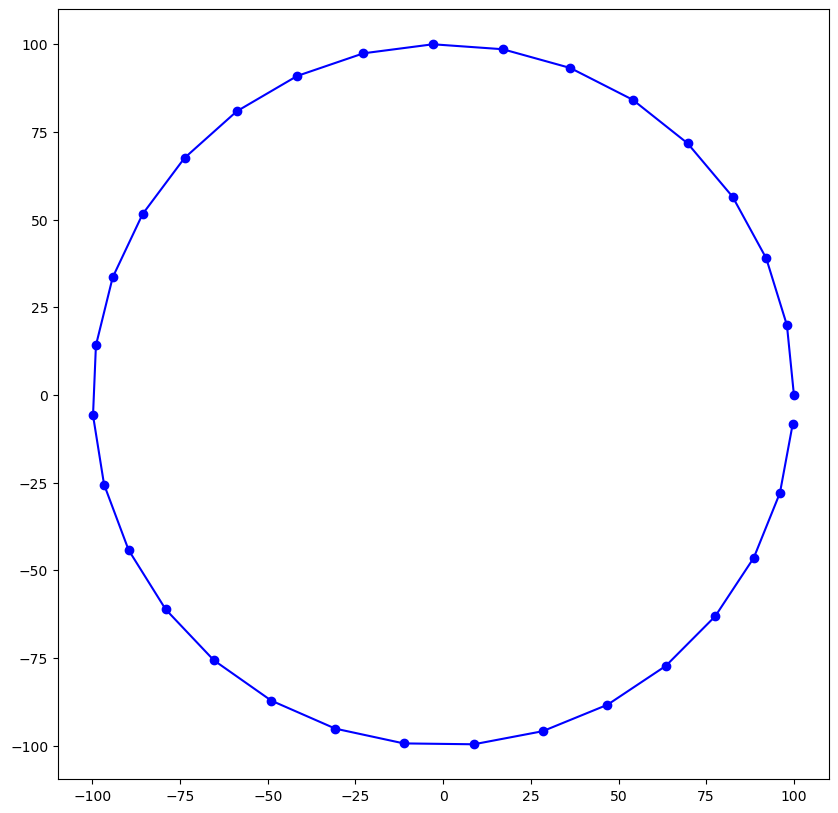
[3]:
from flopy.utils.triangle import Triangle
# We can then use the Triangle class and Triangle program
# to make the mesh, as follows.
tri = Triangle(maximum_area=500, angle=30, model_ws=workspace)
tri.add_polygon(circle_poly)
tri.build(verbose=False)
fig = plt.figure(figsize=(10, 10))
ax = plt.subplot(1, 1, 1, aspect="equal")
pc = tri.plot(ax=ax)
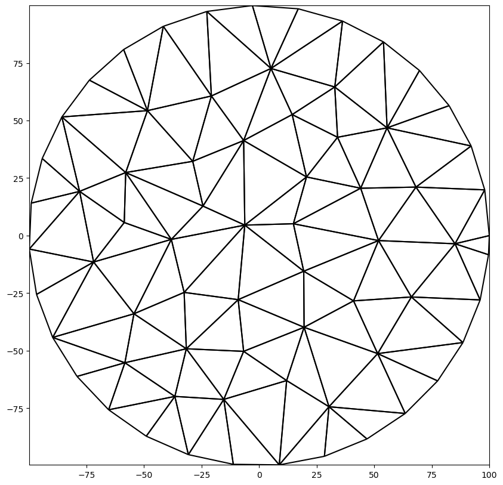
The Triangle class creates a .node and a .poly file as input for the Triangle program. The Triangle class then reads four output files from the Triangle program into numpy structured arrays. These four structured arrays are stored with the object as follows.
[4]:
print(tri.node.dtype)
print(tri.ele.dtype)
print(tri.neigh.dtype)
print(tri.edge.dtype)
[('ivert', '<i8'), ('x', '<f8'), ('y', '<f8'), ('boundary_marker', '<i8')]
[('icell', '<i8'), ('iv1', '<i8'), ('iv2', '<i8'), ('iv3', '<i8')]
[('icell', '<i8'), ('neighbor1', '<i8'), ('neighbor2', '<i8'), ('neighbor3', '<i8')]
[('iedge', '<i8'), ('endpoint1', '<i8'), ('endpoint2', '<i8'), ('boundary_marker', '<i8')]
[5]:
# We can also plot the cells and vertices and label them,
# but this really only works for coarse meshes
fig = plt.figure(figsize=(10, 10))
ax = plt.subplot(1, 1, 1, aspect="equal")
tri.plot(ax=ax, edgecolor="gray")
tri.plot_vertices(ax=ax, marker="o", color="blue")
tri.label_vertices(ax=ax, fontsize=10, color="blue")
tri.plot_centroids(ax=ax, marker="o", color="red")
tri.label_cells(ax=ax, fontsize=10, color="red")
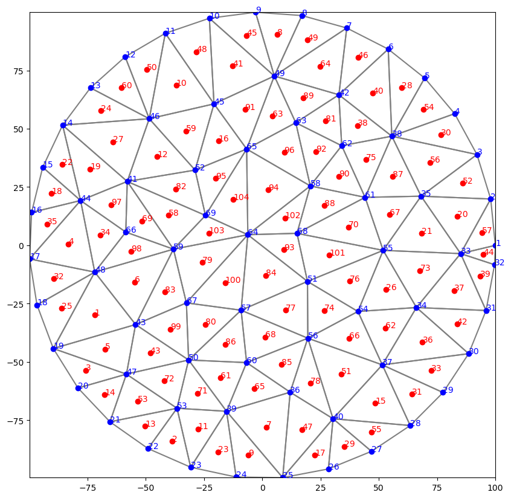
[6]:
# What about a hole?
theta = np.arange(0.0, 2 * np.pi, 0.2)
radius = 30.0
x = radius * np.cos(theta) + 25.0
y = radius * np.sin(theta) + 25.0
inner_circle_poly = [(x, y) for x, y in zip(x, y)]
# The hole is created by passing in another polygon and
# then passing a point inside the hole polygon with the
# add_hole() method.
tri = Triangle(maximum_area=100, angle=30, model_ws=workspace)
tri.add_polygon(circle_poly)
tri.add_polygon(inner_circle_poly)
tri.add_hole((25, 25))
tri.build(verbose=False)
fig = plt.figure(figsize=(10, 10))
ax = plt.subplot(1, 1, 1, aspect="equal")
tri.plot(ax=ax);
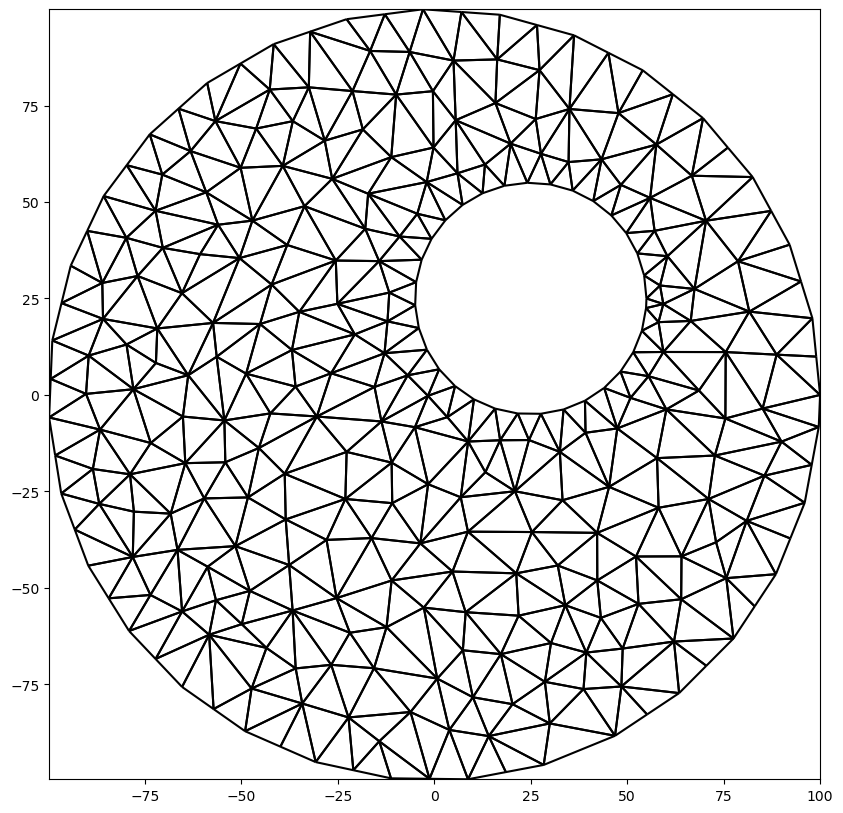
Specifying Regions with Different Triangle Sizes
Different parts of the domain can be assigned different levels of refinement by adding multiple polygons and then identifying the different polygons as regions with different maximum triangle areas.
[7]:
active_domain = [(0, 0), (100, 0), (100, 100), (0, 100)]
area1 = [(10, 10), (40, 10), (40, 40), (10, 40)]
area2 = [(60, 60), (80, 60), (80, 80), (60, 80)]
tri = Triangle(angle=30, model_ws=workspace)
tri.add_polygon(active_domain)
tri.add_polygon(area1)
tri.add_polygon(area2)
tri.add_region((1, 1), 0, maximum_area=100) # point inside active domain
tri.add_region((11, 11), 1, maximum_area=10) # point inside area1
tri.add_region((61, 61), 2, maximum_area=3) # point inside area2
tri.build(verbose=False)
fig = plt.figure(figsize=(10, 10))
ax = plt.subplot(1, 1, 1, aspect="equal")
tri.plot(ax=ax);
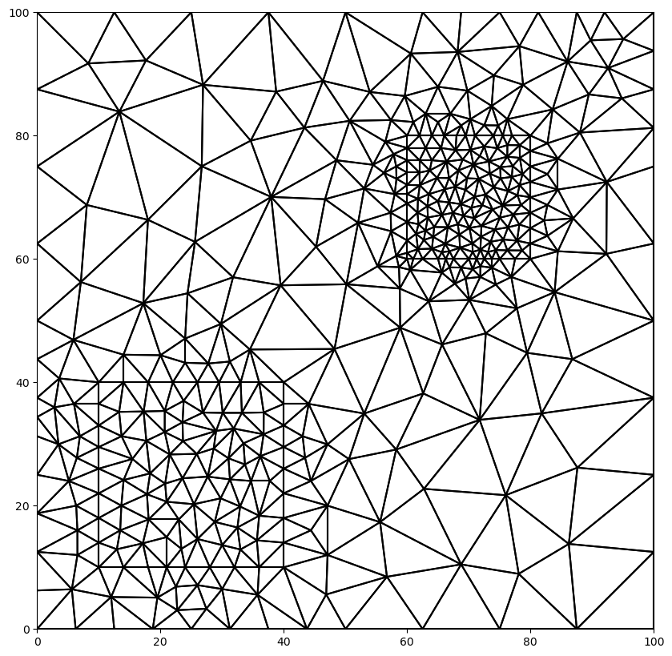
Identifying Boundary Cells
The Triangle class has some limited capabilities for identifying the cells on polygone boundaries. In the example above, three polygons were added to the Triangle class. An integer boundary marker is automatically calculated and assigned by the Triangle class. Boundary marker 1 corresponds to the first line segment of the first polygon added. So in this case, boundary marker 1 corresponds to cells along the line [(0, 0), (100, 0)]. Boundary marker 2 corresponds to the next line segment,
which is along the right face of the domain.
Triangle has a method for getting back an integer array for the mesh that has a boundary marker id for each cell. Values of zero indicate that the cell does not touch a boundary.
[8]:
# this shows all the boundary cells
ibd = tri.get_boundary_marker_array()
ibd = np.ma.masked_equal(ibd, 0)
fig = plt.figure(figsize=(10, 10))
ax = plt.subplot(1, 1, 1, aspect="equal")
pc = tri.plot(a=ibd, cmap="jet")
plt.colorbar(pc, shrink=0.5);
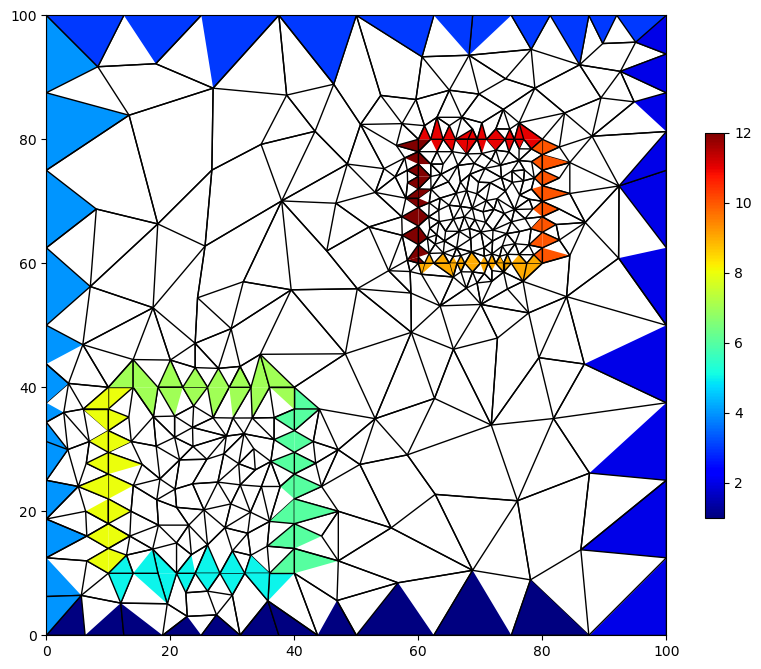
[9]:
# we could plot just one group of boundary cells
# this shows all the boundary cells
ibd = tri.get_boundary_marker_array()
ibd = np.ma.masked_not_equal(ibd, 4)
fig = plt.figure(figsize=(10, 10))
ax = plt.subplot(1, 1, 1, aspect="equal")
pc = tri.plot(a=ibd, cmap="jet", edgecolor="gray")
cb = plt.colorbar(pc, shrink=0.5);
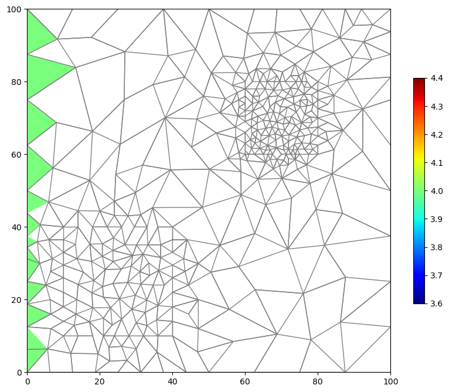
[10]:
# we can also plot the lines that comprise the boundaries
fig = plt.figure(figsize=(10, 10))
ax = plt.subplot(1, 1, 1, aspect="equal")
tri.plot(ax=ax, edgecolor="gray")
for ibm in [1, 2, 3, 4]:
colors = ["blue", "green", "red", "yellow"]
tri.plot_boundary(ibm, ax, marker="o", color=colors[ibm - 1]);
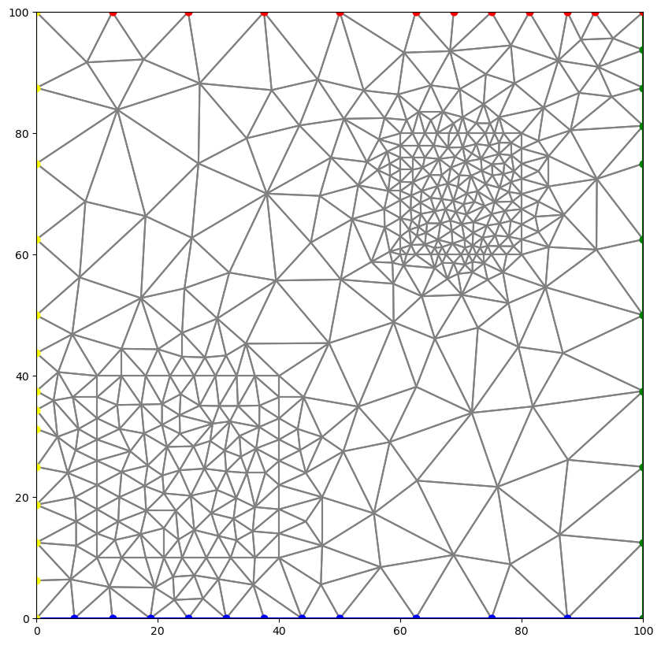
Cell Attributes
If regions (using the add_region() method) are used and an attribute value is provided, it is possible to determine the cells that are within each region.
[11]:
attribute_array = tri.get_attribute_array()
fig = plt.figure(figsize=(10, 10))
ax = plt.subplot(1, 1, 1, aspect="equal")
pc = tri.plot(a=attribute_array, cmap="jet", edgecolor="gray")
cb = plt.colorbar(pc, shrink=0.5);
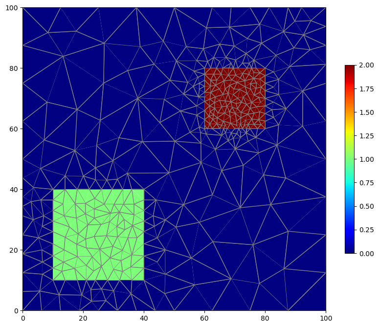
Building a Simple MODFLOW 6 Model
We can use the functionality described so far to build a simple MODFLOW 6 model using Flopy. For demonstration purposes, we’ll create a very coarse triangular mesh and impose constant head boundaries on the left and right sides. We will simulate flow as steady state.
[12]:
active_domain = [(0, 0), (100, 0), (100, 100), (0, 100)]
tri = Triangle(angle=30, maximum_area=100, model_ws=workspace)
tri.add_polygon(active_domain)
tri.build()
fig = plt.figure(figsize=(10, 10))
ax = plt.subplot(1, 1, 1, aspect="equal")
tri.plot(edgecolor="gray")
for ibm in [1, 2, 3, 4]:
colors = ["blue", "green", "red", "yellow"]
tri.plot_boundary(ibm, ax, marker="o", color=colors[ibm - 1]);
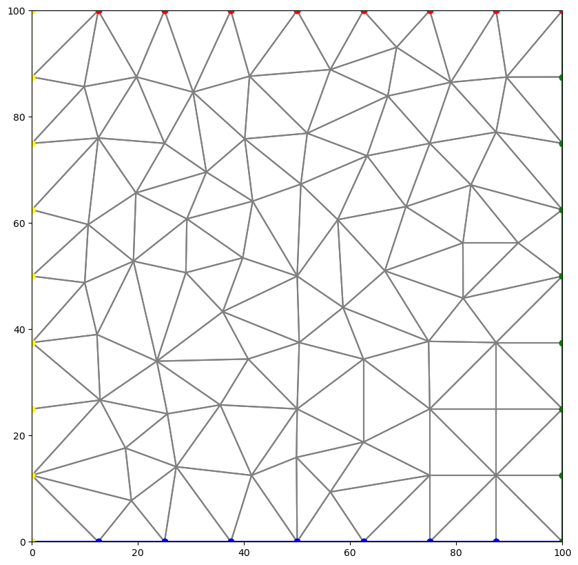
[13]:
fig = plt.figure(figsize=(10, 10))
ax = plt.subplot(1, 1, 1, aspect="equal")
tri.plot(ax=ax, edgecolor="gray")
tri.plot_vertices(ax=ax, marker="o", color="blue")
tri.label_vertices(ax=ax, fontsize=10, color="blue")
tri.plot_centroids(ax=ax, marker="o", color="red")
tri.label_cells(ax=ax, fontsize=10, color="red");
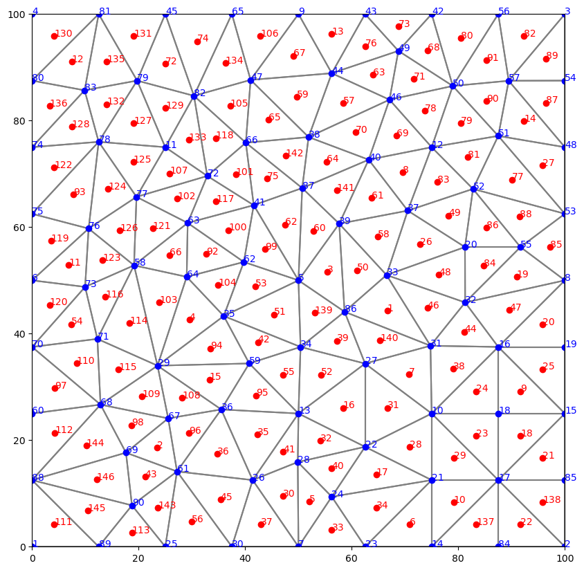
[14]:
name = "mf"
sim = flopy.mf6.MFSimulation(
sim_name=name, version="mf6", exe_name="mf6", sim_ws=workspace
)
tdis = flopy.mf6.ModflowTdis(
sim, time_units="DAYS", perioddata=[[1.0, 1, 1.0]]
)
gwf = flopy.mf6.ModflowGwf(sim, modelname=name, save_flows=True)
ims = flopy.mf6.ModflowIms(
sim,
print_option="SUMMARY",
complexity="complex",
outer_hclose=1.0e-8,
inner_hclose=1.0e-8,
)
cell2d = tri.get_cell2d()
vertices = tri.get_vertices()
xcyc = tri.get_xcyc()
nlay = 1
ncpl = tri.ncpl
nvert = tri.nvert
top = 1.0
botm = [0.0]
dis = flopy.mf6.ModflowGwfdisv(
gwf,
nlay=nlay,
ncpl=ncpl,
nvert=nvert,
top=top,
botm=botm,
vertices=vertices,
cell2d=cell2d,
)
npf = flopy.mf6.ModflowGwfnpf(
gwf, xt3doptions=[(True)], save_specific_discharge=None
)
ic = flopy.mf6.ModflowGwfic(gwf)
def chdhead(x):
return x * 10.0 / 100.0
chdlist = []
leftcells = tri.get_edge_cells(4)
rightcells = tri.get_edge_cells(2)
for icpl in leftcells + rightcells:
h = chdhead(xcyc[icpl, 0])
chdlist.append([(0, icpl), h])
chd = flopy.mf6.ModflowGwfchd(gwf, stress_period_data=chdlist)
oc = flopy.mf6.ModflowGwfoc(
gwf,
budget_filerecord="{}.cbc".format(name),
head_filerecord="{}.hds".format(name),
saverecord=[("HEAD", "LAST"), ("BUDGET", "LAST")],
printrecord=[("HEAD", "LAST"), ("BUDGET", "LAST")],
)
sim.write_simulation()
success, buff = sim.run_simulation(report=True)
WARNING: Unable to resolve dimension of ('gwf6', 'disv', 'cell2d', 'cell2d', 'icvert') based on shape "ncvert".
writing simulation...
writing simulation name file...
writing simulation tdis package...
writing solution package ims_-1...
writing model mf...
writing model name file...
writing package disv...
writing package npf...
writing package ic...
writing package chd_0...
INFORMATION: maxbound in ('gwf6', 'chd', 'dimensions') changed to 16 based on size of stress_period_data
writing package oc...
FloPy is using the following executable to run the model: ../../home/runner/.local/bin/modflow/mf6
MODFLOW 6
U.S. GEOLOGICAL SURVEY MODULAR HYDROLOGIC MODEL
VERSION 6.4.1 Release 12/09/2022
MODFLOW 6 compiled Apr 12 2023 19:02:29 with Intel(R) Fortran Intel(R) 64
Compiler Classic for applications running on Intel(R) 64, Version 2021.7.0
Build 20220726_000000
This software has been approved for release by the U.S. Geological
Survey (USGS). Although the software has been subjected to rigorous
review, the USGS reserves the right to update the software as needed
pursuant to further analysis and review. No warranty, expressed or
implied, is made by the USGS or the U.S. Government as to the
functionality of the software and related material nor shall the
fact of release constitute any such warranty. Furthermore, the
software is released on condition that neither the USGS nor the U.S.
Government shall be held liable for any damages resulting from its
authorized or unauthorized use. Also refer to the USGS Water
Resources Software User Rights Notice for complete use, copyright,
and distribution information.
Run start date and time (yyyy/mm/dd hh:mm:ss): 2023/05/04 16:09:56
Writing simulation list file: mfsim.lst
Using Simulation name file: mfsim.nam
Solving: Stress period: 1 Time step: 1
Run end date and time (yyyy/mm/dd hh:mm:ss): 2023/05/04 16:09:56
Elapsed run time: 0.019 Seconds
WARNING REPORT:
1. NONLINEAR BLOCK VARIABLE 'OUTER_HCLOSE' IN FILE 'mf.ims' WAS DEPRECATED
IN VERSION 6.1.1. SETTING OUTER_DVCLOSE TO OUTER_HCLOSE VALUE.
2. LINEAR BLOCK VARIABLE 'INNER_HCLOSE' IN FILE 'mf.ims' WAS DEPRECATED IN
VERSION 6.1.1. SETTING INNER_DVCLOSE TO INNER_HCLOSE VALUE.
Normal termination of simulation.
[15]:
fname = workspace / f"{name}.hds"
hdobj = flopy.utils.HeadFile(fname, precision="double")
head = hdobj.get_data()
fname = workspace / f"{name}.cbc"
bdobj = flopy.utils.CellBudgetFile(fname, precision="double", verbose=False)
# qxqy = bdobj.get_data(text='DATA-SPDIS')[0]
fig = plt.figure(figsize=(15, 15))
ax = plt.subplot(1, 1, 1, aspect="equal")
tri.plot(ax=ax, a=head[0, 0, :], cmap="jet");

Clean up the temporary workspace.
[16]:
try:
# ignore PermissionError on Windows
temp_dir.cleanup()
except:
pass